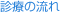
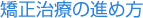
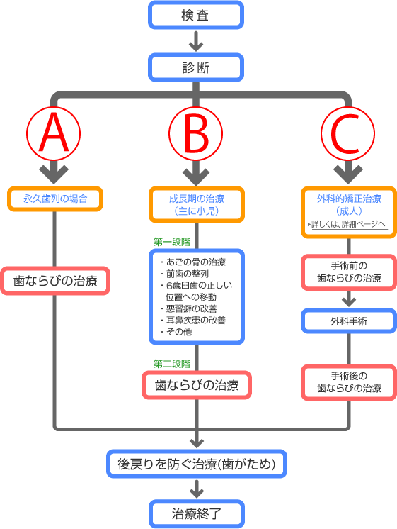

指定自立支援医療機関（育成医療・更生医療） 顎口腔機能診断医療機関


当ページでは、矯正治療の進め方をご説明します。一般的な治療の流れを「矯正治療の進め方」として最初に説明しています。次に子供と成人の方で分けて詳しく説明しています。「フローチャート子供版」、「フローチャート成人版」がありますのでご覧ください。



小学生の低学年から治療が必要になる場合があります。Bケースですが、第一段階の治療として、
- 下アゴや上アゴの骨の成長のコントロールが必要な場合
- 前歯などの歯を一時的に助ける場合（咬合性外傷等）
- 歯並びの基準でありる6歳臼歯の位置を早期に確立する場合
- 舌の悪習癖の改善や噛むことなどの指導が必要な場合
- 姿勢や頚椎の異常がある場合、
- アデノイドや口蓋偏桃などの耳鼻疾患がある場合、
- 乳歯の早期抜去が必要で、永久歯の咬合誘導をする場合
以上の場合は、第一段階の治療が必要であったり、他科との治療の協力を仰ぐ場合があります。
そして永久歯が揃い、成長が一段落したところで、第二段階の歯並びの治療を行い、機能的な咬合を確立することがスタートします。歯が動かし終わったところで、後戻りを防ぐ治療（歯固め）が行われます。
大抵の場合、第一段階の治療中は2～3ヶ月毎の通院で済みます。第二段階の歯並びの治療中は、1ヵ月毎の通院となります。後戻りを防ぐ治療（歯がため）は2～3ヵ月毎の通院です。
大人の歯の場合は、Aケースの矯正単独の治療や、骨格の問題が大きい場合はCケース（外科的矯正治療）となります。
相談は無料ですので、お気軽に来院して下さい。お口の中やお顔を拝見して、矯正治療の必要性、開始時期、期間、方法、費用などの概要を説明いたします。所要時間は30分程度です。治療をお望みの方は当日の検査も可能です。
矯正治療に必要な各種検査（レントゲン撮影、歯型取り、写真撮影、CTなど）を行います。所要時間は1時間程度です。
検査結果を分析し、診断を行います。治療計画や治療費をご説明いたします。耳鼻疾患との関連が疑われる場合は耳鼻科の専門医をご紹介いたします。治療を始めるかどうかは診断内容に十分納得してから決定してください。
診断に基づいた治療計画に沿って装置を装着いたします。併せてむし歯を作らないように歯磨き指導などを行います。
骨格に問題（あごが小さかったり大きかったり）のある方には成長のコントロールを行います。たいていの場合は、在宅時のみの使用です。歯を支える土台の骨が小さい場合は歯ぐきの骨（歯槽骨）を広げる装置などが入ります。筋機能訓練法（MFT）を必要に応じて行います
成長が終了したら本格的な歯並びの治療に入ります。または、成長のコントロールを継続する場合もあります。
きれいな歯並びになったところで、矯正装置を除去し、歯の表面をピカピカに磨き上げます。
矯正装置の除去後、きれいになった歯並びを安定させ、維持させるための保定装置（リテーナー）を装着していただきます。主に3ヶ月ごとの通院です。
保定を開始してから約2年後には、数ヶ月から1年ごとの定期検診をお勧めします。ホームドクターとして当院をご利用下さい。
相談は無料ですので、お気軽に来院して下さい。お口の中やお顔を拝見して、矯正治療の必要性、開始時期、期間、方法、費用などの概要を説明いたします。所要時間は30分程度です。治療をお望みの方は当日の検査も可能です。
矯正治療に必要な各種検査（レントゲン撮影、歯形取り、写真撮影、CTなど）を行います。所要時間は1時間程度です。成人の場合は、顎関節に問題があればMRIの検査を行います。
検査結果を分析し、診断を行います。治療計画や治療費をご説明いたします。治療を始めるかどうかは診断内容に十分納得してから決定してください。
いよいよ装置がつきます！装置によって異なりますが、3週間から1ヶ月ごとの来院が望ましいです。来院ごとに装置を調節していきます。
きれいな歯並びになったところで、矯正装置を除去し、歯の表面をピカピカに磨き上げます。
矯正装置の除去後、きれいになった歯並びを安定させ、維持させるための保定装置（リテーナー）を装着していただきます。主に3ヶ月ごとの通院です。
保定を開始してから約2年後には、数ヶ月から1年ごとの定期検診をお勧めします。ホームドクターとして当院をご利用下さい。